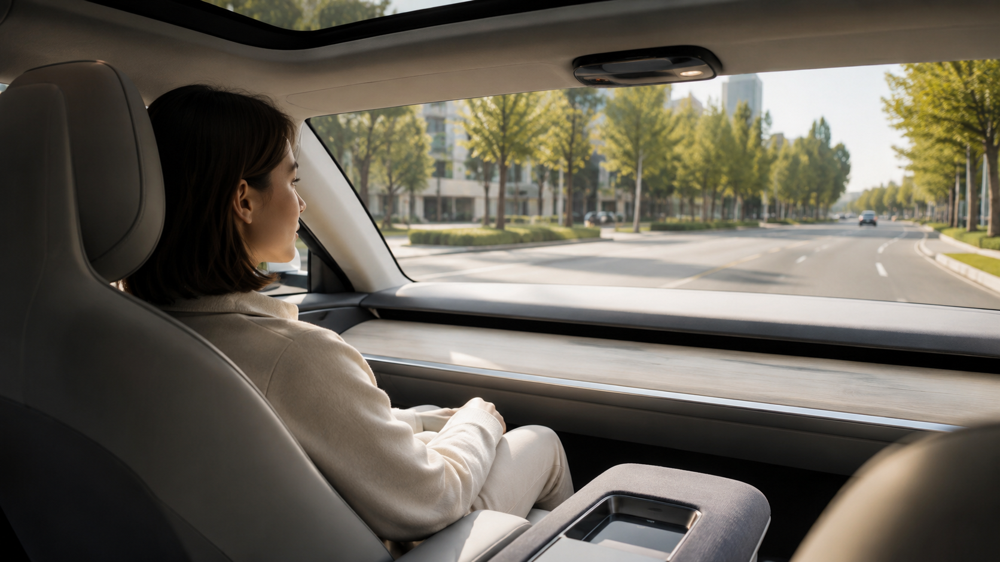

Stationary VR
Participants see the virtual journey through a VR headset, but no physical vehicle motion is added.
Master’s thesis · Ongoing
This is my master’s thesis at Ulm University. I am comparing four ways of simulating vehicle motion in VR: stationary VR, a YawVR platform, the room-scale VAMPIRE Chair, and a real car. The aim is to understand how these conditions affect realism, presence, comfort, workload, and interaction during the ride. I am currently building and testing the study setup, so participant results are not yet available.

AI-generated illustration for the vehicle-motion simulation study.Vehicle-motion simulators differ greatly in cost, size, and the type of movement they can reproduce. This thesis looks at what changes when people experience the same virtual journey with no physical motion, with two different motion systems, and in a real moving vehicle.
The study is intended to show where lower-cost simulators are useful, where their limits become noticeable, and how physical motion affects both the overall experience and interaction during the ride.
Participants see the virtual journey through a VR headset, but no physical vehicle motion is added.
A compact motion platform adds rotational and tilt-based motion cues while the participant remains in VR.
A powered room-scale chair moves through the available space to create physical motion cues during the virtual journey.
A real moving car provides the reference condition for comparing the three simulator setups.
The comparison focuses on:
I am currently finalising the experimental design, building the Unity study software, integrating the simulator hardware, and testing the full procedure. Participant data collection has not started yet, so there are no participant results to report.
This page will be updated soon with additional information about the study design, experimental systems, and thesis progress.